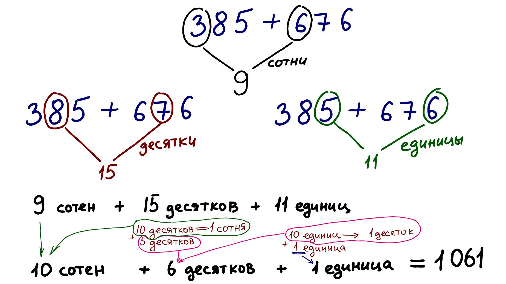
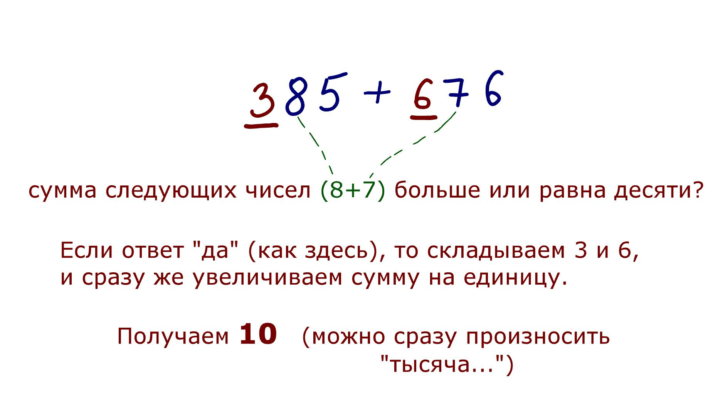
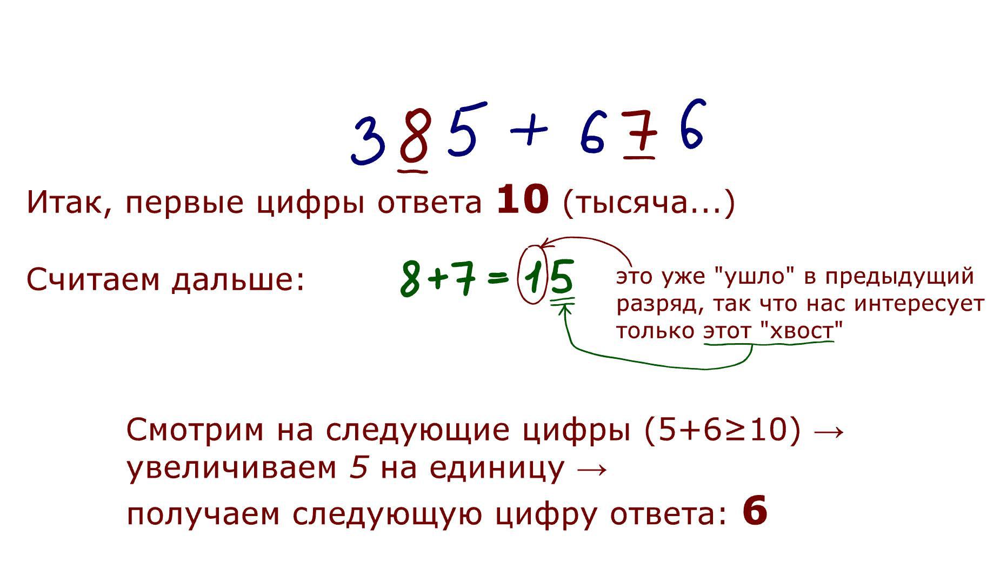
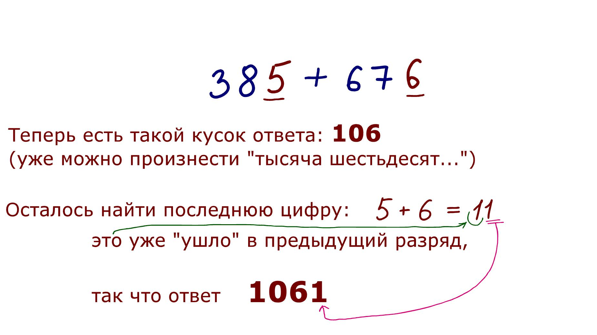

Проще всего, конечно, сложение: например, сложим 385 и 676
Здесь видно, как числа "переползают" из разряда в раздяд: получилось 9 сотен и 15 десятков; 15 десятков - одна сотня и пять десятков. Эта одна сотня "переползает" в предыдущий разряд, получается 10 сотен (тысяча) и 5 десятков.
Точно так же с разрядом единиц: получили 11 единиц - один десяток и одна единица. Десяток "переползает" в предыдущий разряд и складывается с пятеркой → получаем шесть десятков и одну единицу.
Итого ответ 1061 (десять сотен, шесть десятков, одна единица).
Сначала складываем цифры из разряда сотен (3 и 6) и сразу смотрим на следующий разряд: сумма будет больше или равна десяти? В нашем примере больше, поэтому прибавляем единицу к сумме (3+6) → получаем десять сотен (можем начинать произносить ответ: "тысяча..."
Дальше аналогично: складываем десятки (8+7=15), не обращаем внимания на левую цифру ответа (1) - мы уже учли ее на предыдущем шаге; нас интересует "хвост" - цифра 5.
Действуем также, как в прошлый раз: смотрим на сумму цифр следующего разряда (5+6) - это больше десяти. Увеличиваем "хвост" суммы десятков (5) на единицу → получаем шесть десятков.
Можем произнести "тысяча шестьдесят..."
Остался последний шаг: складываем единицы (5+6=11), на левую цифру не обращаем внимания, а "хвост" от 11 и будет последней цифрой ответа.
В общем-то, это похоже на простой школьный столбик, только считается слева направо, это гораздо легче: можно начинать сразу произносить ответ.
Самое сложное, это не растерять все эти числа, удержать их в голове. Вначале они прямо расползаются. Можно начинать с небольших двузначных чисел (чтобы их сумма не была больше ста), а самое-самое простое - это складывать одинаковые числа, просто удваивать.
Например: 48+48
Складываем десятки: восемь, произносим "девяносто..." (т.к. сумма единиц больше десяти).
Затем сразу произносим "шесть" - это хвост от суммы 8+8
Если потренироваться, будет впечатление, что ты прямо сразу ответ называешь, а на самом деле ты просто считаешь слева направо